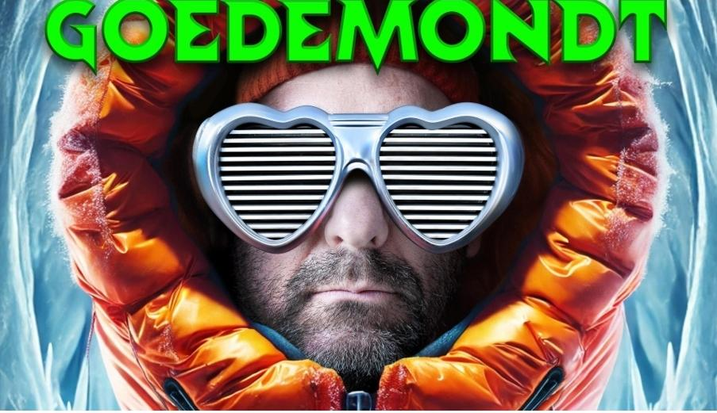
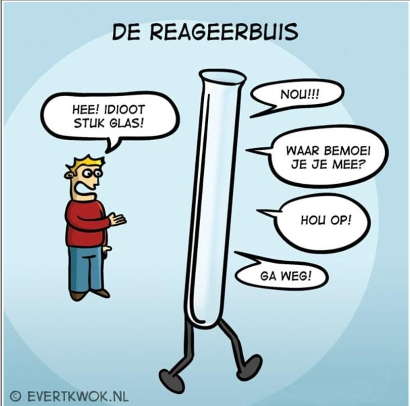
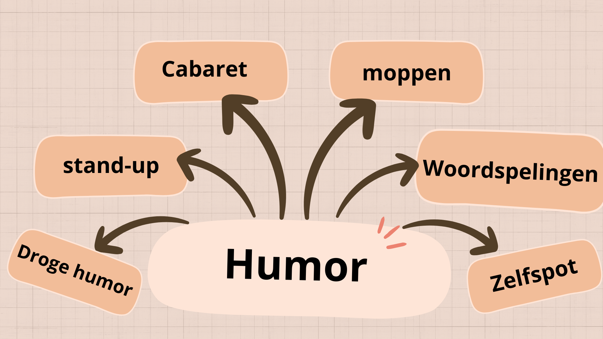

Photo 1
The photo shows Ronald Goedemondt wearing a bright orange winter jacket with a large hood. He has on heart-shaped sunglasses with black-and-white horizontal stripes. The background is icy blue, evoking a cold, wintry setting. His name, "GOEDEMONDT," appears in bold green letters at the top. The contrast reflects the show’s title Mijn Lieve Achterdocht (My Dear Suspicion), possibly symbolizing love mixed with doubt. It suggests a performance that is both personal and ironic, typical of Goedemondt’s comedic style. I personally am not the biggest fan of this kind of humor, but I am a fan of a good laugh.
Photo 2
In this image you see a test tube. The boy says something mean to the test tube and so the test tube responds. The joke hear doesn’t translate well to English but if you were to translate it literally means that a reaction tube reacts when you say something to it. This is a prime example of the dry humor that the Dutch love so much. I personally also like this humor from time to time.
Photo 3

The image shows a group of performers on stage in a theatrical scene. They are wearing colorful and vintage costumes. One performer is lifted high above the rest, arms raised, while others pose dramatically around them. This photo captures the spirit of cabaret within the Dutch culture. It is playful, bold, full of self-deprecation and often satirical.
Photo 4

The image shows five men in costumes with fake abs using a washboard, this is a reference to a Dutch saying. They are posing humorously for a song cover. The photo uses self-deprecating humor. The men are making fun of themselves and stereotypes around masculinity and body image. The message is playful: don’t take yourself too seriously and have fun being who you are.
Photo 5

The image shows a blue and white floor mop placed on a wooden floor. The mop head is wide, flat. The handle is upright and extends vertically from the mop head. The floor is made of dark brown wood planks. This photo is a visual pun in the Dutch language. The word mop has multiple meanings, it means a short funny story and a cleaning tool (the one you’re seeing in the picture).
Infographic
